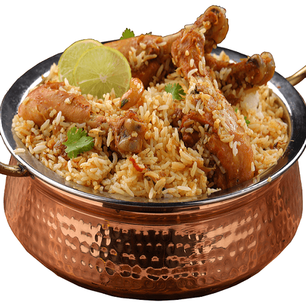

Biryani

Description
Biryani is a fragrant and flavorful South Asian rice dish, layered with aromatic basmati rice, tender meat (such as chicken, mutton, or beef), and a blend of rich spices. Slow-cooked to perfection, the dish combines savory, spicy, and slightly tangy flavors, often garnished with fried onions, boiled eggs, and fresh herbs. Known for its royal taste and festive appeal, biryani is enjoyed as a celebratory meal across many cultures, offering a comforting yet luxurious dining experience.
Ingredients
- Basmati rice
- Meat (chicken, mutton, or beef)
- Onions (fried golden brown)
- Yogurt
- Ginger-garlic paste
- Tomatoes
- Cooking oil or ghee
- Spices (cumin, coriander, garam masala, turmeric, chili powder, cardamom, cloves, cinnamon, bay leaf)
- Fresh herbs (mint and cilantro)
- Saffron or food color (optional, for aroma and color)
- Salt to taste
- Boiled eggs (optional, for garnish)
Steps
- Cook the rice – Parboil the basmati rice with whole spices (cardamom, cloves, cinnamon, bay leaf) until 70% cooked. Drain and set aside.
- Prepare the meat – Marinate the meat with yogurt, ginger-garlic paste, turmeric, chili powder, and salt. Cook with onions and tomatoes until tender.
- Layer the biryani – In a large pot, spread a layer of rice, then a layer of cooked meat. Repeat until all rice and meat are used, finishing with rice on top.
- Add garnish – Sprinkle fried onions, chopped herbs, saffron milk (or food color), and a drizzle of ghee over the top layer.
- Dum cooking – Cover tightly and cook on low heat (“dum”) for 20–30 minutes to let the flavors blend.
- Serve – Fluff gently, garnish with boiled eggs or more fried onions, and serve hot with raita or salad.
Home